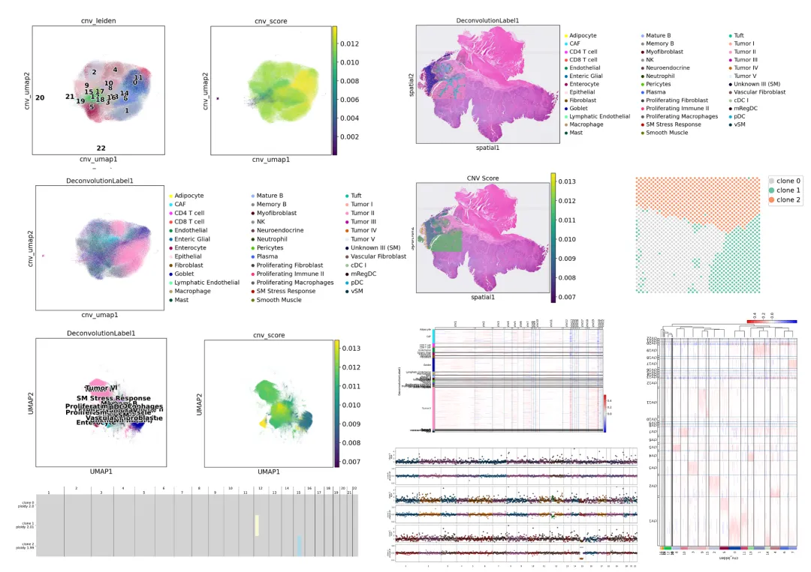

空间转录组数据拷贝数变异分析学习手册
原文：https://mp.weixin.qq.com/s?__biz=MzAwMzIzOTk5OQ==&mid=2247535878&idx=3&sn=261bcb4d8110b913731659780cc2fba0&chksm=9b3c3456ac4bbd400410b52fce004a87e64dd695615d847effaaa82460251e18477c14242922#rd 合集：单细胞教程全收录

空间转录组数据拷贝数变异分析手册

 **拷贝数变异 （Copy number alterations，以下简称CNA；infercnv包也习惯描述为Copy Number Variation，CNV）是一种重要的基因组变异，在癌症的发生和发展过程中起着至关重要的作用。确定肿瘤细胞中CNA的特征对早期肿瘤检测、划分肿瘤异质性、了解肿瘤进展模式和揭示耐药机制具有重要意义。在传统的CNV分析中，Bulk测序只能给整个肿瘤的平均拷贝数→掩盖了克隆异质性；单细胞CNV（scCNV）虽然能看到每个细胞的拷贝数，但完全丢失了空间位置。空间转录组CNV保留每个spot真实组织坐标的前提下，同时推断其染色体拷贝数状态。**工具简介：
**拷贝数变异 （Copy number alterations，以下简称CNA；infercnv包也习惯描述为Copy Number Variation，CNV）是一种重要的基因组变异，在癌症的发生和发展过程中起着至关重要的作用。确定肿瘤细胞中CNA的特征对早期肿瘤检测、划分肿瘤异质性、了解肿瘤进展模式和揭示耐药机制具有重要意义。在传统的CNV分析中，Bulk测序只能给整个肿瘤的平均拷贝数→掩盖了克隆异质性；单细胞CNV（scCNV）虽然能看到每个细胞的拷贝数，但完全丢失了空间位置。空间转录组CNV保留每个spot真实组织坐标的前提下，同时推断其染色体拷贝数状态。**工具简介：
1、Infercnv是一个可扩展的python库，用于从单细胞转录组学数据中推断拷贝数变异(CNV) 事件。它在很大程度上受到 InferCNV 的启发，但与 scanpy 配合得很好，并且更具可扩展性
2、CalicoST是一款专门针对空间转录组(ST)数据开发的概率模型和算法，主要用于癌症研究。它的核心目标是同时推断肿瘤的等位基因特异性拷贝数异常(CNA)，并重建肿瘤的遗传进化和空间传播模式（即系统发育地理）。
本教程基于Python完成，没有基础的小伙伴可见生信Python速查手册，自学有困难的小伙伴可见：Python实战-玩转空间转录组分析本教程基于Linux中的Jupyter环境演示，计算资源不足的同学可参考： 足够支持你完成硕博生涯的生信环境 配置一个心仪的工作站(硬件+环境配置) 独享服务器，生信分析不求人
本教程复现集锦 ：

-Biomamba
所见即所得
InferCNV
InferCNV学习手册以html文件格式提供，可在浏览器中打开并翻阅学习：

教程目录 ：
一、写在前面
二、 空间 CNV（spatial CNV）
2.1 什么是 CNV？为什么肿瘤里这么重要？
2.2 传统 CNV 分析的三大盲区
2.3 空间 CNV（spatial CNV）到底是什么？
2.4 空间 CNV 能回答哪些过去 10 年答不了的问题？
2.5 总结
三、InferCNV
3.1 导入所需库
3.2 读取测试文件
3.3 上游预处理
3.4 基因注释
3.5 CNV分析
3.6 CNV可视化
3.7 基于CNV信息的聚类结果
环境信息
空间转录组教程全收录
欢迎致谢
文末下载链接中包含的内容：

测试文件约22.59GB ，大家注意按需下载！
CalicoST
CalicoST学习手册以html文件格式提供，可在浏览器中打开并翻阅学习：

教程目录 ：
一、写在前面
二、CalicoST 软件介绍
2.1 核心功能与分析目标
2.2 关键优势
2.3 肿瘤等位基因频率变异
三、代码实操
3.1 下载数据
3.2 预输入文件准备
（1）准备SNP信息文件
（2）准备configuration文件
（3）运行 CalicoST
（4）python可视化
环境信息
空间转录组教程全收录
欢迎致谢
文末下载链接中包含的内容

******测试文件约 519.62MB，大家注意按需下载！ ******

往期订阅


生信基地现已开放终身订阅，现已包含几十篇订阅资料，未来37年持续更新：那就开放一个终身订阅吧~
2025已更新订阅内容：
2025订阅须知《Cell》复现|中性粒细胞scRNA-seq图谱阐明抗肿瘤抗原呈递效力
《Cancer Cell》|时空单细胞揭示CRC的PD-1治疗免疫细胞动态
代码复现|吞噬作用增强肿瘤中巨噬细胞的氧化代谢和免疫抑制特征一文学会scRNA Velocity剪切速率分析
一文学会四种scRNA-seq轨迹分析
一文学会四种scRNA-seq细胞通讯分析
一文学会四种基因共表达网络分析
一文学会四种scRNA-seq拷贝数变异分析
分子批量对接与亲和力热图绘制
代码复现| scRNA-seq揭示人纤维化皮肤病中的成纤维细胞异质性与增殖
单细胞免疫组库测序(scTCR+scBCR)学习手册一文掌握WGBS分析流程
《NC》代码复现|snATAC联合scRNA-seq揭示小鼠肾脏细胞分化程序与疾病靶点
空间转录组数据基础分析手册
空间转录组|多样本整合分析手册
一文学会三种空转数据共表达网络分析一文搞定空转数据反卷积分析三种方法教你搞定空转数据邻域分析：squidpy+stSME+NMF分解空转细胞通讯分析学习手册：CellPhoneDB+Commot+stLearn空间转录组轨迹分析学习手册
 解锁前需阅读：2025订阅须知
解锁前需阅读：2025订阅须知
下载链接
资料连接：https://pan.baidu.com/s/1EDC7FXVXJqYZ6RPpN_3kbA
联系客服微信Biomamba_zhushou获取提取码
 -Biomamba
-Biomamba